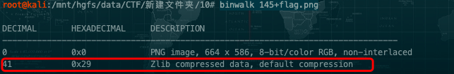

图片隐写术之教练我想打CTF
题目：
flag格式为hctf{字符串}
附件：
{kind=link}
解题步骤：
下载附件解压之后得到一张图片。
使用binwalk分析文件是否存在多重文件。

发现图片中存在zip的隐藏文件，安装zsteg，kali下的安装方法：
gem install zsteg
用命令将图片中的zip压缩包提取出来并命名为2.zip
zsteg -E 1b,rgb,lsb 145+flag.png > 2.zip

执行完命令之后，会在当前目录下找到一个zip文件，解压会得到一个名为1的可行文件。
chmod +x 1
./1
得到flag。
Binwalk介绍
Binwalk是用于搜索给定二进制镜像文件以获取嵌入的文件和代码的工具。 具体来说,它被设计用于识别嵌入固件镜像内的文件和代码。 Binwalk使用libmagic库,因此它与Unix文件实用程序创建的魔数签名兼容。 Binwalk还包括一个自定义魔数签名文件,其中包含常见的诸如压缩/存档文件,固件头,Linux内核,引导加载程序,文件系统等的固件映像中常见文件的改进魔数签名。
下载与安装
$ sudo su //然后输入密码，获取root权限，避免后期执行命令时出现权限不够的情况。
$ sudo apt-get remove binwalk //卸载原有的旧版binwalk（如果有的话），采用git的方式进行安装，以便得到更好的更新。
$ sudo apt-get update //更新软件
$ sudo apt-get install build-essential autoconf git //获取开发工具git
$ git clone https://github.com/devttys0/binwalk //从git上获取binwalk的源代码
$ cd binwalk //进入binwalk文件夹
$ sudo python setup.py install //导入python环境
#如果自己linux上的python是2.x版的，则紧接着还需要执行下面这步导入python-lzma模块：
$ sudo apt-get install python-lzma
//如果执行命令的中途出现了“无法获得锁之类的情况”，执行下面命令即可
sudo rm /var/lib/dpkg/lock
或
sudo rm /var/lib/apt/lists/lock //把lock文件删了
功能
扫描选项:
- -B,-- signature 扫描目标文件的常见文件签名
- -R,--raw =
扫描目标文件的指定字符序列 - -A,--opcodes扫描目标文件中常见可执行代码
- -m,--magic =
指定要使用的自定义魔数签名文件 - -b,--dumb 禁用智能签名关键字
- -I,--invalid显示结果标记为无效
- -x,--exclude =
排除与 匹配的结果 - -y,--include =
只显示匹配 的结果
提取选项:
- -e,--extract自动提取已知的文件类型
- -D,--dd =
签名,为文件扩展名为 ,然后执行 - -M,--matryoshka 递归扫描提取的文件
- -d,--depth =
限制matryoshka递归深度(默认值:8级深) - -C,--directory =
将文件/文件夹提取到自定义目录(默认值:当前工作目录) - -j,--size =
限制每个提取的文件的大小 - -n,--count =
限制提取文件的数量 - -r,--rm 提取后删除刻录文件
- -z,--carve从文件中读取数据,但不执行提取实用程序
熵分析选项:
- -E,--entropy 计算文件熵
- -F,--fast计算更快,但不太详细的熵分析
- -J,--save将熵图保存为PNG图像
- -Q,--nlegend 从熵图图中省略图例
- -N,--nplot 不生成熵图
- -H,--high =
设置上升沿熵触发阈值(默认值:0.95) - -L,--low =
设置下降沿熵触发阈值(默认值:0.85)
原始压缩选项:
- -X, --deflate扫描原始deflate压缩流
- -Z, --lzma 扫描原始LZMA压缩流
- -P, --partial浅度扫描,速度更快
- -S, --stop 找到第一个结果后停止扫描
二进制差异选项:
- -W,--hexdump 执行文件或文件的hexdump/diff
- -G,--green 只显示包含所有文件中相同字节的行
- -i,--red 仅显示包含所有文件中不同字节的行
- -U,--blue只显示一些文件中包含不同字节的行
- -w,--terse 只显示第一个文件的十六进制转储
一般选项:
- -l,--length =
要扫描的字节数 - -o,--offset =
以此偏移开始扫描 - -O,--base =
向所有打印的偏移量添加基址 - -K,--block =
设置文件块大小 - -g,--swap =
扫描前每n个字节反转一次 - -f,--log =
将结果记录到文件 - -c,--csv 将结果记录到CSV格式的文件中
- -t,--term格式化输出以适合终端窗口
- -q,--quiet 禁止输出
- -v,--verbose 详细输出
- -h,--help显示帮助
- -a,--finclude =
只扫描名称与此正则表达式匹配的文件 - -p,--fexclude =
不扫描名称与此正则表达式匹配的文件 - -s,--status =
启用指定端口上的状态服务器